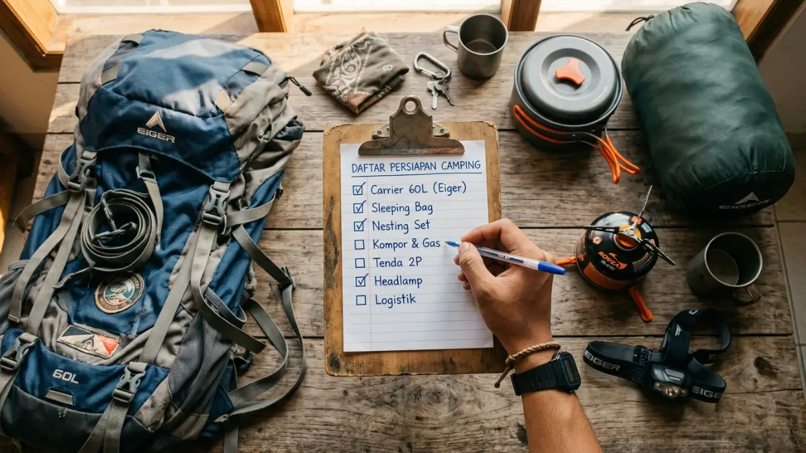
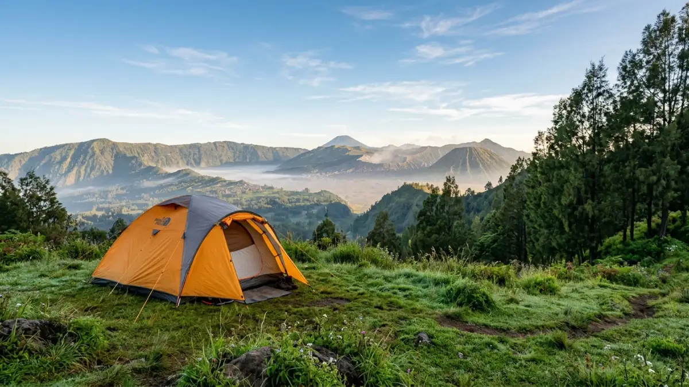

Panduan lengkap persiapan dan perlengkapan camping untuk pemula yang ingin memulai petualangan alam terbuka.Pengen camping adalah langkah awal yang bagus untuk menikmati alam terbuka — dengan persiapan yang tepat, pengalaman pertama kamu bisa aman, nyaman, dan menyenangkan.
- Apa Itu Camping dan Mengapa Banyak Orang Ingin Mencobanya?
- Persiapan Apa yang Wajib Dilakukan Sebelum Camping?
- Perlengkapan Camping Apa yang Wajib Dibawa?
- Bagaimana Memilih Lokasi Camping yang Tepat untuk Pemula?
- Kesalahan Umum yang Sering Dilakukan Pemula Saat Camping
- Tips Keselamatan Camping yang Wajib Diketahui Pemula
- Kesimpulan
- FAQ
Apa Itu Camping dan Mengapa Banyak Orang Ingin Mencobanya?
Camping adalah aktivitas menginap di alam terbuka menggunakan tenda atau shelter portabel, biasanya dilakukan di area pegunungan, tepi sungai, padang rumput, atau camping ground yang dikelola.
Kegiatan ini cocok untuk siapa saja yang ingin jeda dari rutinitas sehari-hari, mendekatkan diri dengan alam, dan melatih kemandirian.
Banyak orang yang pengen camping karena manfaatnya yang nyata: mengurangi stres, meningkatkan kualitas tidur, memperkuat hubungan sosial, dan memberikan rasa pencapaian.
Penelitian dari University of Michigan (2023) menunjukkan bahwa tiga hari berada di alam terbuka dapat menurunkan kadar kortisol (hormon stres) rata-rata 21% dibandingkan lingkungan perkotaan.
Camping bukan sekadar tidur di luar. Ini tentang belajar hidup dengan lebih sedikit, mengandalkan keterampilan dasar, dan menghargai lingkungan sekitar.
Persiapan Apa yang Wajib Dilakukan Sebelum Camping?
Persiapan camping yang baik dimulai dari perencanaan lokasi, pengecekan cuaca, dan penyusunan daftar perlengkapan — setidaknya satu minggu sebelum keberangkatan.
Tentukan Lokasi dan Durasi Terlebih Dahulu
Pilih lokasi sesuai kemampuan fisik dan pengalaman kamu. Untuk pemula, camping ground resmi yang memiliki fasilitas dasar seperti toilet dan sumber air adalah pilihan paling aman. Beberapa lokasi camping populer di Indonesia untuk pemula antara lain:
- Camping ground Ranca Upas, Bandung (Jawa Barat)
- Bukit Kuneer, Batu (Jawa Timur)
- Gunung Prau via Dieng (Jawa Tengah) untuk pemula yang ingin mendaki ringan
- Pantai Papuma, Jember (Jawa Timur) untuk camping tepi laut
Tentukan durasi — apakah satu malam atau dua malam — karena ini memengaruhi jumlah perlengkapan dan logistik yang perlu dibawa.
Cek Cuaca dan Izin Lokasi
Selalu periksa prakiraan cuaca di aplikasi terpercaya setidaknya tiga hari sebelum keberangkatan. Hindari camping saat musim hujan lebat atau angin kencang jika kamu belum berpengalaman. Beberapa lokasi camping di kawasan taman nasional juga memerlukan izin resmi yang bisa diurus secara online.
Beri Tahu Orang Lain Tentang Rencana Kamu
Ini sering diabaikan tapi sangat penting. Informasikan kepada keluarga atau teman yang tidak ikut: lokasi tujuan, rute yang akan dilalui, dan estimasi waktu kembali. Ini adalah langkah keselamatan dasar yang berlaku universal.

Memilih area dan spot tenda yang tepat adalah kunci kenyamanan camping bagi pemula.Perlengkapan Camping Apa yang Wajib Dibawa?
Perlengkapan camping yang wajib dibawa meliputi tenda, sleeping bag, sumber cahaya, persediaan air, makanan, pakaian cadangan, dan kotak P3K — disesuaikan dengan jumlah orang dan durasi perjalanan.
Shelter dan Tidur
- Tenda: Pilih tenda dome 2-3 orang untuk pemula karena mudah dipasang. Pastikan tenda tahan air dengan rating setidaknya 1500mm waterproof.
- Sleeping bag: Perhatikan rating suhu. Untuk dataran tinggi Indonesia (di atas 1.500 mdpl), pilih sleeping bag dengan rating hingga 5 derajat Celsius.
- Matras atau sleeping pad: Mengurangi hawa dingin dari tanah dan meningkatkan kenyamanan tidur.
Penerangan dan Navigasi
- Headlamp dengan baterai cadangan — lebih praktis dari senter genggam
- Power bank jika kamu bergantung pada smartphone untuk navigasi
- Peta fisik area camping jika sinyal tidak tersedia
Makanan dan Air
- Bawa air minum yang cukup atau filter air portabel jika sumber air tersedia di lokasi
- Pilih makanan yang mudah disiapkan: nasi instan, makanan kemasan ringan, atau makanan yang bisa dimasak dengan kompor portable
- Kompor portable dan tabung gas mini untuk memasak
Pakaian dan Perlindungan
- Pakaian berlapis (layering system): base layer, mid layer, dan outer layer tahan angin/hujan
- Kaus kaki ekstra — minimal dua pasang
- Topi dan sarung tangan untuk daerah dingin
- Sunscreen dan lip balm untuk camping siang hari
Keselamatan dan P3K
- Kotak P3K dasar: perban, antiseptik, obat sakit kepala, obat diare, plester
- Peluit darurat
- Lighter atau korek api yang disimpan di tempat kering
- Tali serba guna (paracord)
Bagaimana Memilih Lokasi Camping yang Tepat untuk Pemula?
Lokasi camping yang tepat untuk pemula adalah yang memiliki akses mudah, fasilitas dasar tersedia, dan sudah terdaftar secara resmi — bukan area liar tanpa pengelolaan.
Pertimbangkan faktor-faktor berikut saat memilih lokasi:
- Aksesibilitas: Apakah bisa dicapai dengan kendaraan atau membutuhkan trekking panjang?
- Fasilitas: Adakah toilet, sumber air, atau area memasak yang tersedia?
- Keamanan: Apakah lokasi berada di jalur yang sudah dipetakan dan dikenal?
- Regulasi: Apakah camping diizinkan dan apakah memerlukan izin khusus?
- Ketinggian dan iklim: Semakin tinggi lokasi, semakin dingin dan semakin besar risiko cuaca ekstrem.
Kesalahan Umum yang Sering Dilakukan Pemula Saat Camping
Pemula sering meremehkan persiapan, membawa terlalu banyak barang tidak penting, atau tidak memperhitungkan kondisi cuaca — kesalahan-kesalahan ini bisa membuat camping jadi pengalaman yang tidak menyenangkan.
Berikut kesalahan yang paling sering terjadi:
- Tidak mencoba pasang tenda sebelum berangkat: Latihan di rumah jauh lebih baik daripada belajar di tengah gelap dan hujan.
- Membawa beban berlebih: Setiap item harus punya fungsi jelas. Kurangi barang yang "mungkin berguna".
- Tidak membawa air yang cukup: Ini adalah penyebab paling umum dari kelelahan dan dehidrasi saat camping.
- Membuang sampah sembarangan: Prinsip Leave No Trace mengharuskan kamu membawa pulang semua sampahmu.
- Tidak memperhitungkan waktu gelap: Di alam terbuka, matahari terbenam lebih cepat terasa. Rencanakan aktivitas agar selesai sebelum gelap.
Tips Keselamatan Camping yang Wajib Diketahui Pemula
Keselamatan camping bergantung pada tiga hal utama: persiapan yang matang, keputusan yang rasional di lapangan, dan kemampuan untuk mengenali batas diri sendiri.
- Jangan pernah camping sendirian sebagai pemula — selalu bawa setidaknya satu teman berpengalaman
- Hindari mendirikan tenda di dasar lembah atau tepi sungai jika cuaca tidak menentu karena risiko banjir bandang
- Kenali gejala hipotermia: tubuh menggigil terus-menerus, bicara cadel, dan kehilangan koordinasi
- Simpan makanan dengan rapi agar tidak menarik satwa liar ke area kemah kamu
- Matikan api unggun sepenuhnya sebelum tidur atau meninggalkan area
Kesimpulan
Pengen camping bisa segera diwujudkan dengan langkah yang terstruktur. Mulai dari menentukan lokasi camping ground resmi yang sesuai kemampuan, menyusun daftar perlengkapan dasar, memperhatikan prakiraan cuaca, dan selalu mengutamakan keselamatan.
Jangan menunggu kondisi "sempurna" — camping pertama tidak harus di puncak gunung. Satu malam di camping ground terdekat sudah cukup untuk membangun kepercayaan diri dan pengalaman berharga sebelum kamu menjelajah lokasi yang lebih menantang.
FAQ
Berapa biaya yang dibutuhkan untuk camping pertama kali?
Biaya camping sangat bervariasi tergantung lokasi dan perlengkapan yang kamu miliki. Untuk pemula yang menyewa perlengkapan, biaya bisa berkisar antara Rp 200.000 hingga Rp 600.000 per orang untuk satu malam, belum termasuk transportasi dan konsumsi. Membeli perlengkapan sendiri membutuhkan investasi awal yang lebih besar namun lebih ekonomis jangka panjang.
Apa yang harus dilakukan jika cuaca tiba-tiba buruk saat camping?
Masuk ke dalam tenda, pastikan tenda sudah dipatok dengan kuat, dan hindari pohon tinggi atau area terbuka saat petir. Jika kondisi sangat berbahaya dan kamu berada di jalur yang dikenal, turun ke titik evakuasi atau shelter terdekat.
Apakah perlu membawa obat-obatan khusus saat camping?
Setidaknya bawa P3K dasar: antiseptik, perban, plester, obat sakit kepala, obat diare, dan obat alergi jika kamu punya riwayat alergi. Jika kamu memiliki kondisi medis tertentu, konsultasikan dengan dokter sebelum camping di alam bebas.